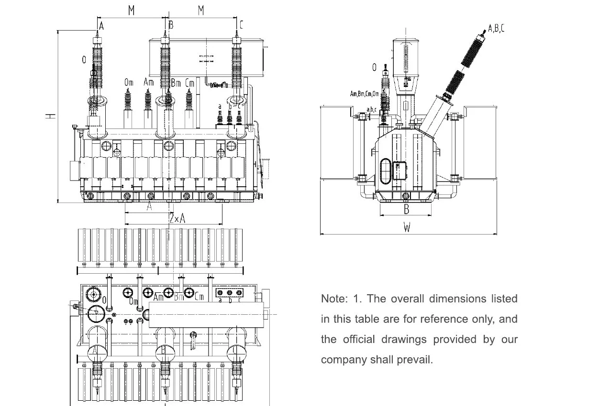
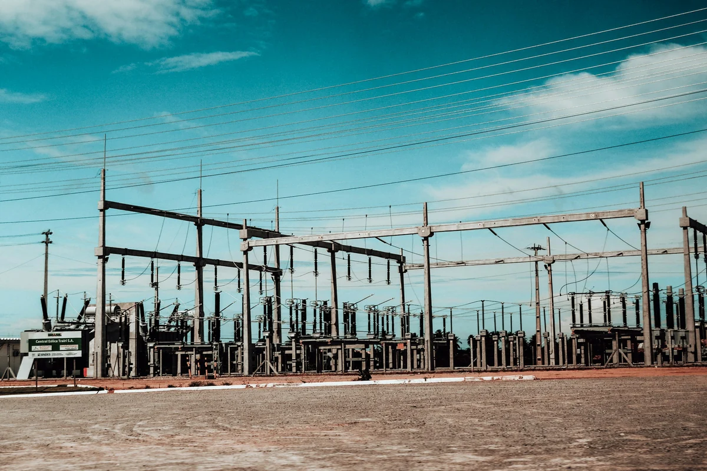

Power transformer · 220 kV
220 kV Three-Winding Power Transformer
SSZ-31500~240000/220
Three-winding on-load voltage-regulating main transformer for 220 kV substations.
- Rated power
- 31.5–420MVA
- High voltage
- 220–242kV
- Windings
- 3

Overview
As the mainstream product in the power system, 35–220 kV standardised oil-immersed transformers are widely used in urban and rural grid transformation, industrial and mining enterprises, new-energy generation such as wind and photovoltaic, and construction.
The technology has been continuously upgraded and mainstream products reach the national secondary energy-efficiency standard. Efficiency exceeds 99.6%, no-load loss is 10–20% better than the industry and load loss 5–10% better. The design has passed the short-circuit withstand test of a CNAS-certified laboratory.
Outline drawing
Dimension letters on the drawing correspond to the columns of the ratings table. Overall dimensions are for reference only; the official drawings provided by Tianyu prevail.

Design and performance
Functional features
- Voltage conversion
- AC voltage is boosted or stepped down by electromagnetic induction to meet the voltage requirement of each scenario.
- Power transmission
- Carries energy from the generation end to the user end while reducing line losses.
- Lightweight design
- Octagonal oil-tank structure reduces the weight of the tank and transformer oil by 10%.
- Operating-status monitoring
- Oil-surface and winding temperature, oil level, partial discharge, core grounding current and oil chromatography monitored online, with early warning.
- High anti-corrosion level
- Tank treated with the C5-M anti-corrosion process for high salt spray, mould and strong corrosion at sea.
Product advantages
- Low temperature rise
- Self-adhesive transposed conductor; winding temperature rise ≤ 60 K, 5 K or more better than the standard.
- Low noise
- Shock-absorbing rubber and sand filling; noise ≤ 62 dB(A), more than 3 dB(A) better than the standard.
- Low loss
- No-load loss 10% and load loss 5% better than the industry; efficiency above 99.6%.
- Low partial discharge
- Non-partial-discharge design and process treatment; PD ≤ 70 pC, more than 30% better than the standard.
- High short-circuit resistance
- Electromagnetic calculation and simulation, high-quality transposed conductor, self-locked internal and external support bars.
Application scope

- Low-loss power transformers to the GB 20052-2024 energy-efficiency standard, for power generation and transformation, urban and rural grid upgrades, industrial and mining enterprises, new-energy generation, steel and construction.
- Offshore and onshore photovoltaic and wind 220 kV double-split booster stations, using two independent power supplies to improve operating reliability.
- Floating offshore wind turbines in deep and open seas, and onshore wind farms far from load centres with long-distance transmission needs.
More power transformers
All power transformers SZ-8000~31500/3535 kV Oil-Immersed Power Transformer8–31.5 MVA
SZ-8000~31500/3535 kV Oil-Immersed Power Transformer8–31.5 MVA SZ-6300~63000/6666 kV Oil-Immersed Power Transformer6.3–63 MVA
SZ-6300~63000/6666 kV Oil-Immersed Power Transformer6.3–63 MVA SSZ-6300~63000/110110 kV Three-Winding Power Transformer6.3–200 MVA
SSZ-6300~63000/110110 kV Three-Winding Power Transformer6.3–200 MVA 220 kV double-split220 kV Double-Split Booster Transformer220 kV
220 kV double-split220 kV Double-Split Booster Transformer220 kV 66 kV liquid-immersed nacelle66 kV Offshore Wind Nacelle Transformer66 kV
66 kV liquid-immersed nacelle66 kV Offshore Wind Nacelle Transformer66 kV 35–110 kV vehicle-mounted35–110 kV Mobile Intelligent Substation35–110 kV
35–110 kV vehicle-mounted35–110 kV Mobile Intelligent Substation35–110 kVNeed a rating that is not listed?
Send the capacity, voltage ratio, vector group, impedance and site conditions. Engineering confirms the design against the approved project specification.